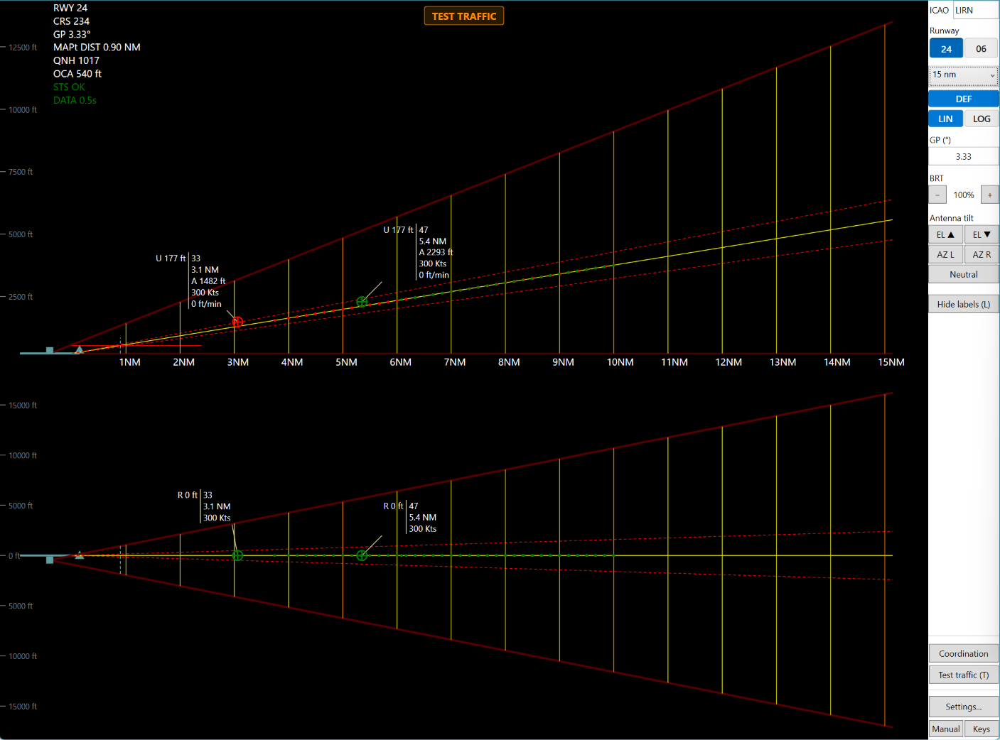
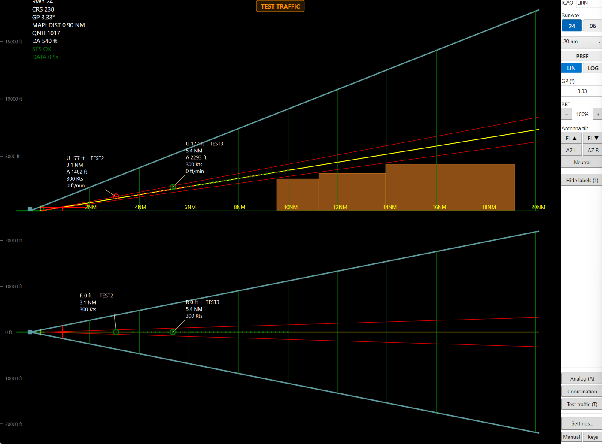
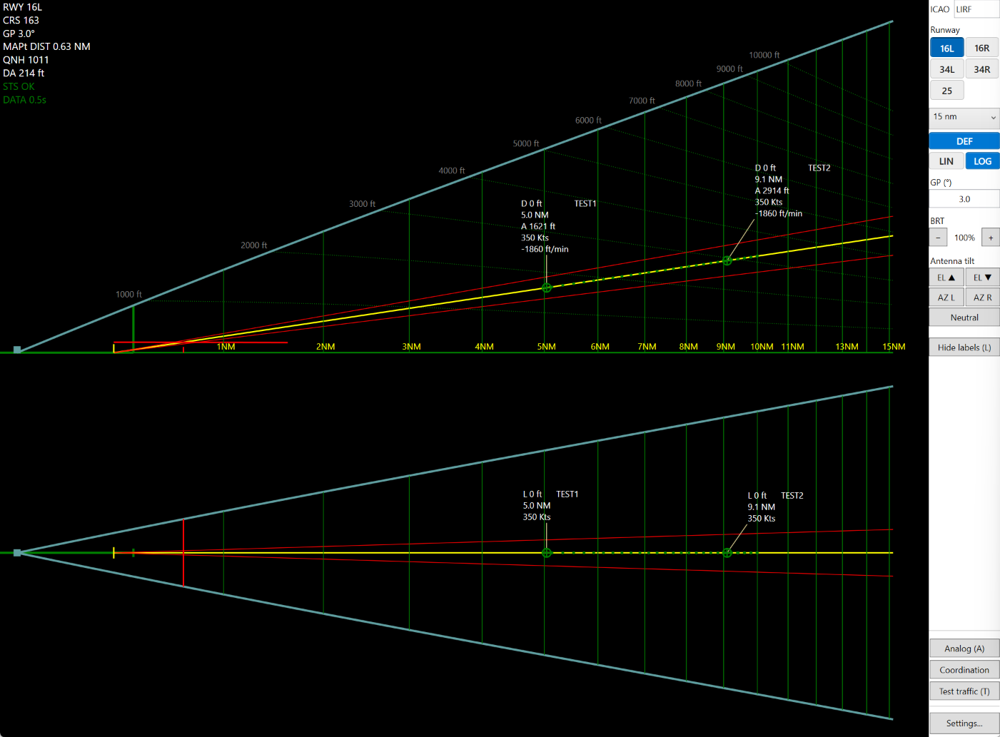
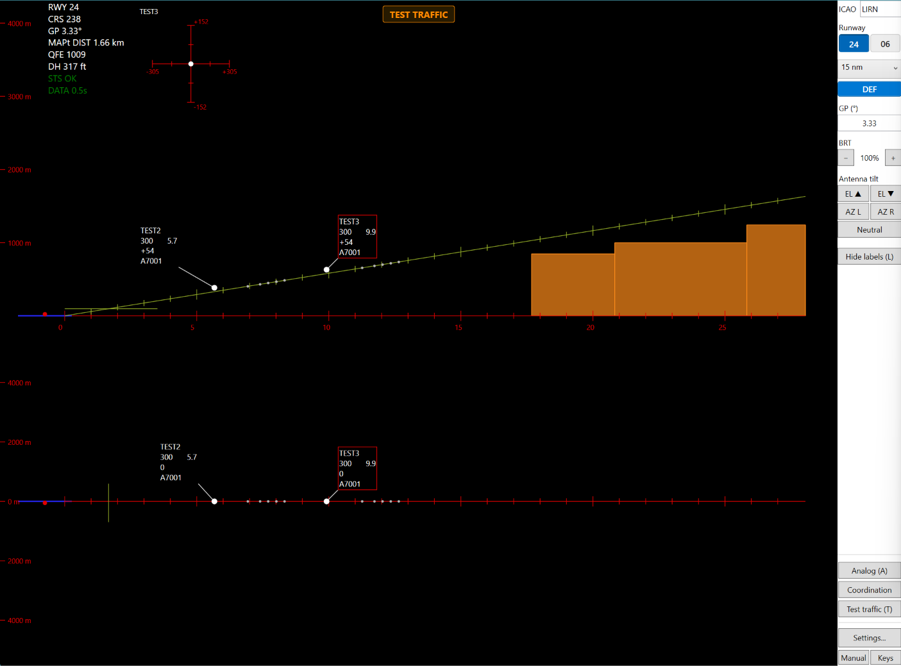
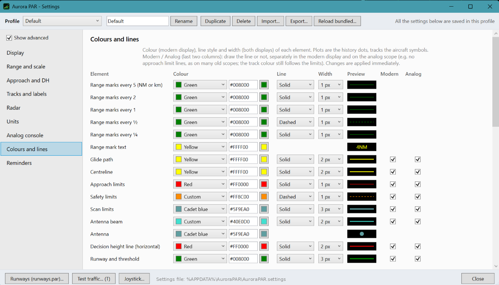
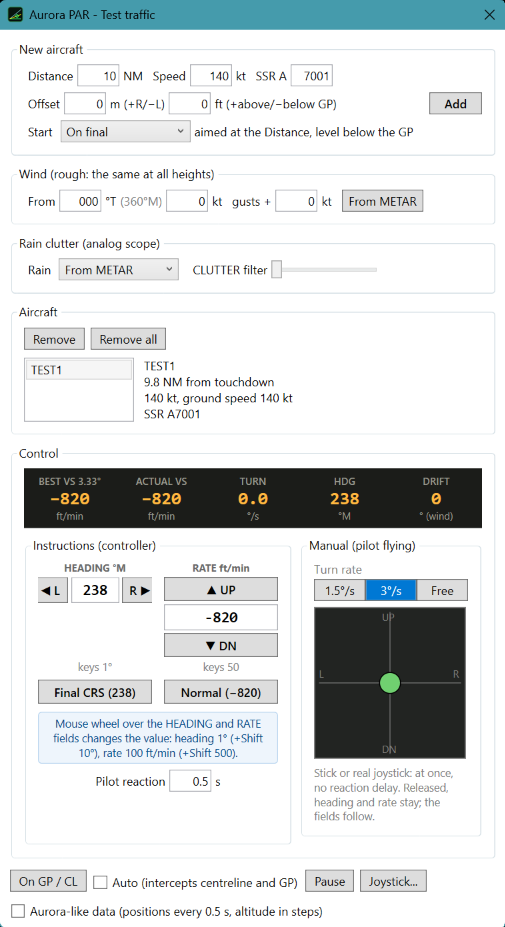
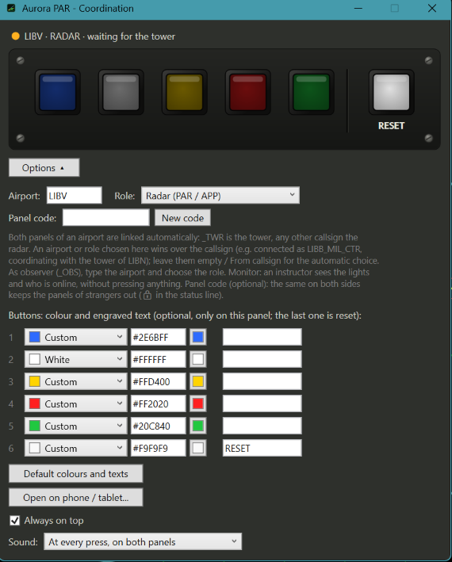
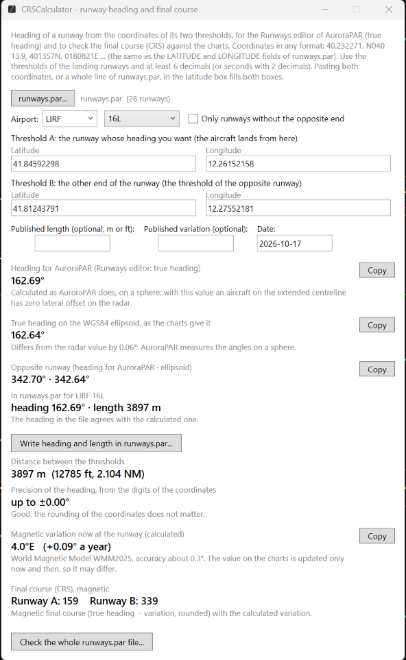
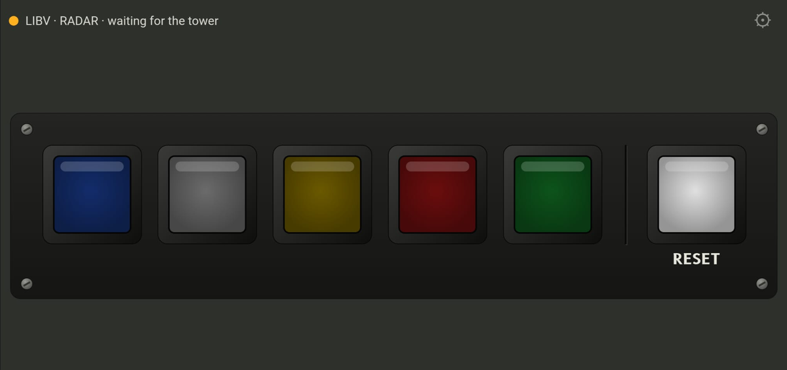

A fork of AuroraPAR by bornac1: a Precision Approach Radar display for the Aurora ATC client, with elevation and azimuth views, a console-style analog mode, a coordination light panel and test traffic to practise with. Tracks that glide smoothly across the scope, and highly customizable: make it look like the radar you know, or start from one of nine ready-made profiles.
Test build for Windows 64-bit. Free, open source (MIT). A third-party add-on for IVAO's Aurora software, not made, endorsed or supported by IVAO. For flight simulation only, never for real navigation.

Real screenshot: PAR2090 profile, test traffic on final to LIRN 24
Highly customizable
One program, many radars
Colours, lines, symbols, labels, units, scales, antenna position, console keys: almost everything on the screen is yours to set, and saved in a profile you can share. Nine profiles come with the program, from a plain modern display to old analog scopes. Press P to switch between them.
DefaultA plain modern display, the starting point for your own.
The profiles reproduce the look of each radar from photos and screenshots, as far as AuroraPAR can draw it. Not certified copies of real equipment.
What it does
Built for the approach
Everything a PAR controller looks at, on one screen, with the settings to make it look and behave like the radar you know.
Tracks that glide
Track drawing rebuilt from scratch: the symbol moves on every frame with the speed, course and descent of the aircraft and is pulled gently towards each new position from Aurora. No more jumps every update: the tracks flow across the scope with an incredibly smooth feel, while the history dots stay on the real positions.
Two views, like the real thing
Elevation and azimuth, with glide path, decision height, scan limits, range marks and the antenna beam that follows the tilt.
An analog console mode
Phosphor echoes lit by the sweeping beam, afterglow, knobs and backlit keys, mechanical drum readouts and optional rain clutter taken from the METAR.
Coordination light panel
The radar and tower light panel with the buzzer of the real one, on the PC and on a phone or tablet, paired by callsign.
Test traffic to practise
Fly your own aircraft on the scope: intercept from the side, change heading and rate of descent, add wind, use a keyboard, a virtual stick or a real joystick.
Yours to customise
Every colour, line style and width, custom track symbols, label layouts, NM or km, feet or metres, linear, log or angular scales, ranges up to 40 NM. Export a profile and share it.
Terrain, clutter, crosshair
Minimum altitudes or terrain under the approach from a simple text file, ground clutter near the antenna with an MTI switch, and an ILS-style deviation crosshair for the selected aircraft.
Runways without the pain
CRSCalculator works out heading, length and magnetic variation from two thresholds and checks your whole runways file. Full manual included.
Screenshots
See it at work

The main window: elevation above, azimuth below, the terrain of LIRN 24 under the approach and two test aircraft on final.Analog console: phosphor scope lit by the sweeping beam, FIAR keys, readouts, range panel.

Log distance scale: the last miles larger, so the traffic stays in view without changing the range.

Deviation crosshair, as on ARTMACS: click a track to follow it.

Settings: colour, line style and width of every element, shown or hidden separately in the modern and analog display.
Around the scope
Practise, coordinate, prepare

Test traffic. Add aircraft on final or on an intercept, give headings and rates as a controller, or fly them with a stick or a real joystick. Wind and gusts included.

Coordination panel. Five lights and a reset between radar and tower, paired automatically by callsign. The tower runs the small AuroraCoord program.

CRSCalculator. Runway heading, length and magnetic variation from the two thresholds, written straight into the runways file.

The same light panel on a phone or tablet, in the browser: scan a QR code and it opens set up.
Get started
Up and running in minutes
Download
Get the zip from the Releases page, check the SHA-256 and unzip it anywhere. Nothing to install.
Open Aurora
Start Aurora, allow 3rd party software access and set the traffic refresh to 0.5 s. AuroraPAR reads the traffic and the airport from it.
Pick the runway
Choose the airport and runway. Missing? Add it in the runway editor; CRSCalculator gives the exact heading.
Control
Pick a profile with P, try it with test traffic (key T), then use it on the network.